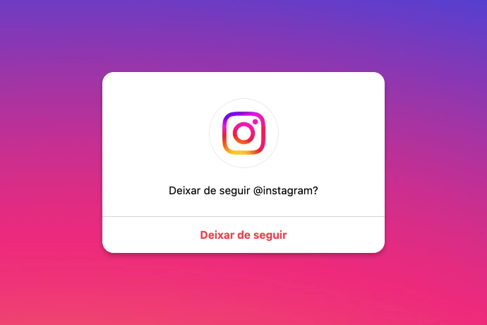

Como deixar de seguir quem não te segue no Instagram
Unfollow de forma automatizada e sem aplicativos.

Muitos de nós já passaram pela situação de seguir uma variedade de perfis no Instagram, na esperança de expandir nossa presença e conquistar mais seguidores. No entanto, com o tempo, percebemos que nem todos os perfis que seguimos retornam o gesto. Gerenciar manualmente essa lista pode consumir muito tempo e energia. Felizmente, existe uma solução eficiente para isso.
Como funciona?
O Não Seguidores Pro é fácil de usar e pode ser instalado como uma extensão no seu navegador. Depois de configurado, ele analisa a lista de quem você segue e identifica aqueles que não te seguem de volta. O processo de deixar de seguir é então automatizado, mas de uma maneira que imita o comportamento de um usuário real, o que reduz o risco de ser detectado como um bot pelo Instagram.
- Instalação da extensão: Comece instalando a extensão "Não Seguidores Pro" no seu navegador Chrome (para Desktop) ou no Kiwi Browser (para Android). Você pode baixar a extensão a partir deste link.
- Carregue a lista de perfis: Após a instalação, clique na extensão e em seguida na opção "Carregar não seguidores" para que seja carregada a lista de perfis que não te seguem de volta. Navegue pela lista e identifique os perfis que você deseja manter seguindo, marcando-os como favoritos.
- Deixar de seguir automatizado: Uma vez que tenha carregado os não seguidores, clique em "deixar de seguir" para iniciar o processo automatizado. A extensão "Não Seguidores Pro" começará a deixar de seguir os perfis não favoritados um por um.
Limites diários para evitar bloqueios
Para garantir que sua conta não seja penalizada, a extensão estabelece limites diários de 100 a 200 perfis a serem deixados de seguir. Embora possa parecer um número limitado, é um equilíbrio crucial para garantir que a atividade seja realizada de forma segura e sustentável. Ao aderir a esses limites, você reduz as chances de enfrentar restrições temporárias em sua conta.
Conclusão
A extensão "Não Seguidores Pro" oferece uma solução prática para saber quem não te segue de volta, automatiza o processo de unfollow e não exige que você forneça credenciais de login. Apesar de paga, você pode experimentar os recursos essenciais da extensão gratuitamente.
Segue muita gente? Faça uma limpeza no seu perfil com esta dica!